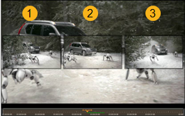

的 滑夹 工具允许您以相同的数量和方向移动剪辑实例的进出点，保留原始持续时间，但改变时间线输出。激活 滑夹 通过单击工具或按 E .
注意: 目标剪辑实例必须具有句柄才能使用 滑 工具。
的 滑夹 工具根据播放头是否在目标剪辑实例上显示不同的查看器预览，但基本原则是相同的。
单击目标剪辑以显示可用的控制柄，然后将剪辑实例拖到新位置。松开鼠标以完成滑动。
注意: 使用 滑夹 工具不会在时间轴上移动剪辑实例，只会更改输出。
此外，推动了防滑的 , (逗号) 或 . (期间) 键或保持 转变 要轻推的 帧增量 设置在查看器下。
提示: 如果您使用 多工具 此外，您可以通过单击剪辑实例底部的 “滑动条” 来轻推。
根据播放头位置，显示以下查看器预览:
注意: 观众背景始终显示播放头的当前位置。
• 当播放头当前不在目标剪辑实例上时，查看器将显示 在 框架 (1) 和 出去 帧 (2)，允许您准确测量新输出。
• 当播放头位于目标剪辑实例上时，查看器将显示 在 框架 (1), 当前 框架 (2)，和 出去 帧 (3)，允许您根据当前帧准确测量剪辑实例的输出。

• 当播放头位于目标剪辑实例上且 A/B 比较处于活动状态时，查看器将显示目标剪辑实例 (1) 和参考 剪辑实例 (2)，允许您将工作轨迹与参考轨迹同步。
|
|